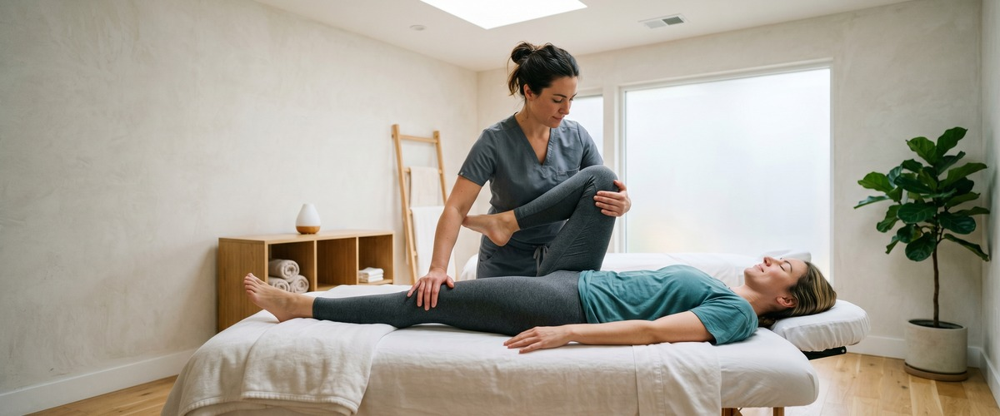
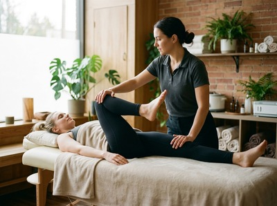
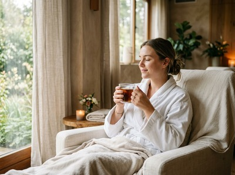

If you sit at a desk for most of the day, your hips are paying a price you probably don't notice until you stand up and feel that familiar pull across the front of your thighs.

Tight hip flexors — the group of muscles that connect your lower spine and pelvis to your legs — are one of the most common complaints among office workers in Glasgow and beyond. The problem is straightforward: when you sit for hours, these muscles shorten and stiffen. When that happens, lower back pain, poor posture, and reduced mobility tend to follow. The good news is that a few targeted stretches, done consistently, can make a real difference.
Your hip flexors are designed to be active, not held in a fixed contracted position for eight hours. When you sit, the iliopsoas and rectus femoris muscles stay shortened the entire time. Over weeks and months, they adapt to that shortened length and start to pull on your pelvis even when you stand.

This forward pull tilts the pelvis, compresses the lower lumbar spine, and often triggers chronic lower back pain. It also limits your stride length when walking and reduces your ability to fully extend the hip during exercise. Many people reach for back pain treatment without realising the root cause is sitting above the hips, not in the back itself.
If any of that sounds familiar, massage for lower back pain alongside regular stretching is often far more effective than rest alone. Book your session today and let us help you get to the root of it.
This is the most effective stretch for the iliopsoas — the deep muscle that runs from your lower vertebrae through the pelvis to the top of the femur. Start in a half-kneeling position with one knee on the floor and the opposite foot forward. Keep your torso upright and gently push your hips forward until you feel a stretch in the front of the kneeling hip.
Hold for 30 to 45 seconds on each side. The key is to avoid arching your lower back to get deeper into the stretch. Instead, engage your core slightly and tuck the tailbone under. Done this way, you are genuinely lengthening the hip flexor rather than loading the lumbar spine.
Try this once in the morning and once after work. Two to three minutes per side is enough to begin reversing the tightness that builds up across a full working day.
If you have some floor space and a spare two minutes, pigeon pose targets the hip rotators and the deep hip flexors simultaneously. From a hands-and-knees position, bring one knee forward and place it behind the same-side wrist. Extend the opposite leg straight behind you, then lower your hips toward the floor.
This stretch does more than open the front of the hip. It also works into the piriformis — a small muscle deep in the glute that often tightens in response to weak or restricted hip flexors. Tight piriformis muscles are a common contributor to sciatica-type pain, where discomfort radiates from the lower back down the leg.
Hold for 60 seconds per side. If full pigeon is too intense to begin with, a reclined version on your back works the same muscles with less load. If you would like professional hands-on support for tight hips alongside your stretching routine, get in touch to book your appointment at Glasgow Thai Massage.
Not everyone can get on the floor at the office, and that is where a standing stretch becomes useful. Stand facing a wall and place both hands lightly on it for balance. Step one foot back into a split stance, keeping the back leg straight and the back heel pressing toward the floor. Tilt your pelvis slightly under, rather than letting your lower back arch, and hold for 30 seconds.
This version lengthens the hip flexors in a more upright position, which is also more functional for people who spend the day at a standing desk or moving between meetings. It is worth doing every hour or two on a particularly heavy sitting day.
Pairing desk stretches with a monthly Thai sports massage — a targeted treatment designed to address muscle imbalances and improve range of motion — gives your body a far better baseline to work from than stretching alone.
Lie on your back with your knees bent. Cross one ankle over the opposite knee to form a figure-four shape, then gently draw both legs toward your chest until you feel a stretch in the outer hip and glute of the crossed leg. This stretch addresses the hip rotators that often become tight alongside the hip flexors in desk workers.
It is one of the most accessible stretches because you can do it in bed in the morning or on a yoga mat in the evening. Hold for 45 to 60 seconds per side. If you want to go deeper into the connection between hip flexibility and overall mobility, our flexibility guide covers exactly that.
Consistency matters more than intensity. Five minutes of hip flexor stretching done daily will outperform a 30-minute session done once a week. The best times are first thing in the morning, after lunch when you have been sitting for a few hours, and after your working day before the muscles cool down completely.

If you are also dealing with back pain or sports-related tightness, combining stretching with professional bodywork accelerates the process considerably. Traditional Thai massage — which uses assisted stretching and acupressure along the body's sen energy lines — is particularly well suited to addressing the kind of hip and lower back stiffness that builds up from a sedentary working life.
The stretches above are simple, require no equipment, and take less time than a coffee break. Your hips will feel looser, your lower back will thank you, and you may find that the general stiffness you assumed was just part of getting older was actually just part of sitting too much. Book online now at Glasgow Thai Massage and start feeling the difference within your first session.
Most people notice a meaningful improvement in hip flexibility within two to four weeks of daily stretching. If you have been sitting for years without addressing hip tightness, it may take six to eight weeks of consistent effort to achieve a full change in resting muscle length. The key is stretching daily rather than occasionally, and combining it with movement breaks throughout the workday.
Yes, and this is one of the most common causes of desk-worker back pain. When the hip flexors shorten, they pull the pelvis into an anterior tilt, which increases the curve in the lower lumbar spine and compresses the vertebrae and surrounding muscles. Releasing the hip flexors through stretching and massage often relieves back pain that seems unrelated to the hips at first.
Traditional Thai massage is particularly effective for hip flexor tightness because it combines assisted stretching with acupressure along the body's energy pathways. The therapist works your hips through a range of motion you might not reach on your own, helping to release deep tension in the iliopsoas and surrounding muscles. Many clients at Glasgow Thai Massage report significant relief after one or two sessions combined with a daily stretching routine.
Both, ideally. A short stretch in the morning prepares the muscles for a long day of sitting, while an evening stretch helps release the tension that has built up during the day. If you can only do one, after work is slightly more effective as the muscles will be warm from the day's activity. Even a two-minute routine at each end of the day makes a noticeable difference over time.
Tight hip flexors and hip rotators are a known contributing factor in some cases of sciatica, particularly where the piriformis muscle is involved. Stretching the hips regularly can relieve pressure on the sciatic nerve by improving pelvic alignment and reducing muscle tension. If your sciatica is persistent or severe, it is worth combining stretching with professional treatment such as sports massage or traditional Thai massage for faster, more targeted relief.